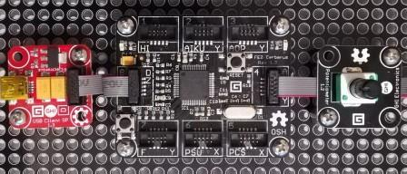

Version: 0.7.0
Potentiometer is connected as followed on Cerberus:

| Potentiometer | Mainboard |
|---|---|
| Socket Type A | Socket 4 |
using System.Diagnostics;
using System.Threading;
using Bauland.Gadgeteer;
using GHIElectronics.TinyCLR.Pins;
namespace TestPotentiometer
{
static class Program
{
static void Main()
{
// Potentiometer connected on Socket 4 (Type A) of FEZ Cerberus mainboard.
Potentiometer potentiometer=new Potentiometer(FEZCerberus.AdcChannel.Socket4.Pin3);
while (true)
{
Debug.WriteLine("Potentiometer voltage: "+potentiometer.ReadVoltage()+"V, percentage:"+(potentiometer.ReadProportion()*100).ToString("F1")+"%");
Thread.Sleep(500);
}
}
}
}